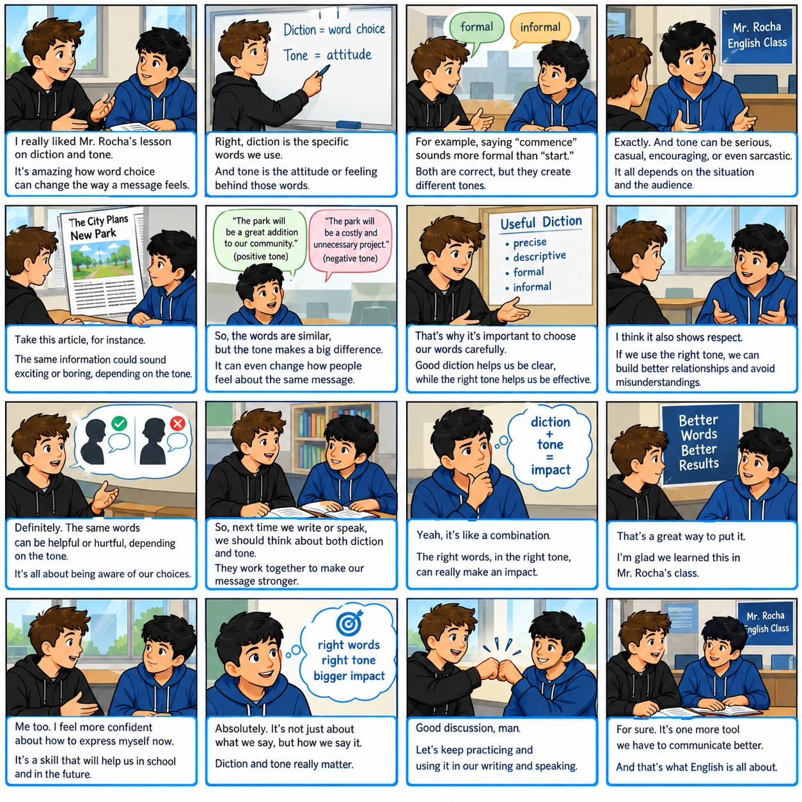

Welcome to Diction and Tone

Activity 1: Video Notes
Watch the video. Take notes and tell Mr. Rocha what the video was about.
Activity 2: Scrambled Image
Order the 25 parts to form the complete Image2.
Target Image
Timer: 0 seconds
Activity 3: I See, I Think, I Wonder
Activity 4: Combining Sentences (C1 Level)
Combine sentences using conjunctive adverbs, semicolons, and conjunctions.
Example: The tone was melancholic; however, the message was hopeful.
Activity 5: Conversation on Tone, Mood, Diction (C2 Level)
Match Person B's responses to Person A's statements. Options will disappear once selected.
Activity 6: Summary Writing

Write a summary of about 100 words based on the image.
Word Count: 0/100
Activity 7: Scrambled Sentences
Click words in the word bank to build the complex sentences. Click words in your answer to remove them.
Activity 8: Reading Comprehension
The Bell Beneath the Mountain
At dusk, when the western ridges burned like embers beneath a shroud of rain, Edrin reached the Gate of Veyruun. No mason’s mark adorned its basalt arch; only a sentence, cut deep into the stone: “Let the faithful enter, and the faithless remember.” He read it twice, though the second reading offered no comfort.
Beyond the gate, the road descended through a forest of silver-barked trees. Their leaves did not stir; nevertheless, a whisper travelled among them—slow, articulate, almost judicial. Edrin tightened his cloak and addressed the darkness: “I carry no crown, no relic, no claim.” The whisper answered... or perhaps the mountain merely exhaled.
He had been warned about this place: its paths remembered every traveller, and its stones repeated every lie. Yet necessity—sternest of counsellors—had driven him from the warm halls of his people. Behind him, the valley lay vulnerable; ahead, beneath leagues of rock, slept the bell whose voice could wake the ancient wardens.
The path ended at a chasm. Across it stood a narrow bridge, pale as a blade; below, black water revolved without sound. Edrin stepped forward. At once, the trees began to toll—not with bells, but with hollow knocks that counted his footfalls: one, two, three. The rhythm was neither hurried nor loud; its composure made it terrible.
Halfway across, a figure emerged from the opposite mist. It wore armour the colour of old ash, and where its face should have been there was only a smooth helm. “Name what you fear,” it commanded.
Edrin’s first impulse was to answer nobly: defeat, dishonour, the ruin of his house. Such words rose readily; they were banners, bright and useless. He looked down into the revolving dark and spoke the smaller truth. “I fear that I shall succeed—and become necessary to those I love.”
For a moment, nothing changed. Then the faceless guardian bowed; the bridge widened beneath Edrin’s boots, and a deep vibration passed through the mountain. Far below, something vast shifted in its sleep.
Edrin continued downward, neither triumphant nor reassured; behind him, the gate closed with the finality of a verdict.
Activity 9: Prefixes and Suffixes (Grade 9)
Prefixes: un- (not, e.g., unhappy), re- (again, e.g., rewrite), pre- (before, e.g., pregame).
Suffixes: -ful (full of, e.g., joyful), -less (without, e.g., hopeless), -ly (how something is done, e.g., quickly), -tion (state/action, e.g., completion).
Activity 10: Informative Text Completion (C1)
Select the correct missing sentences from the dropdowns to complete the text.
Activity 11: Final Writing Reflection
Write what you have learned about mood, tone, and diction. Check for spelling, punctuation, grammar, and capitalization.